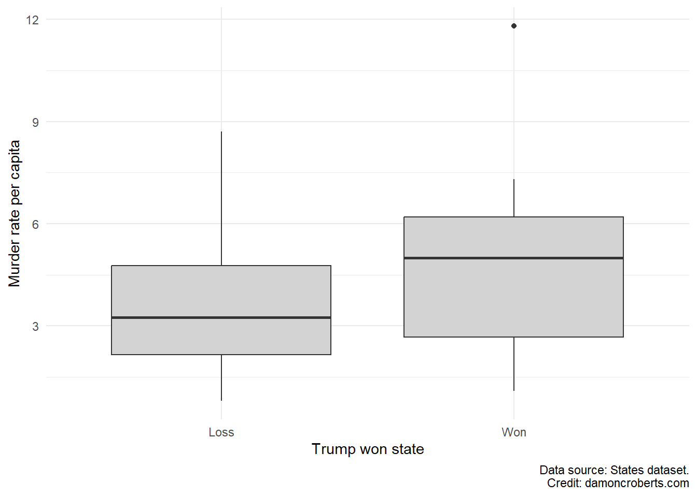
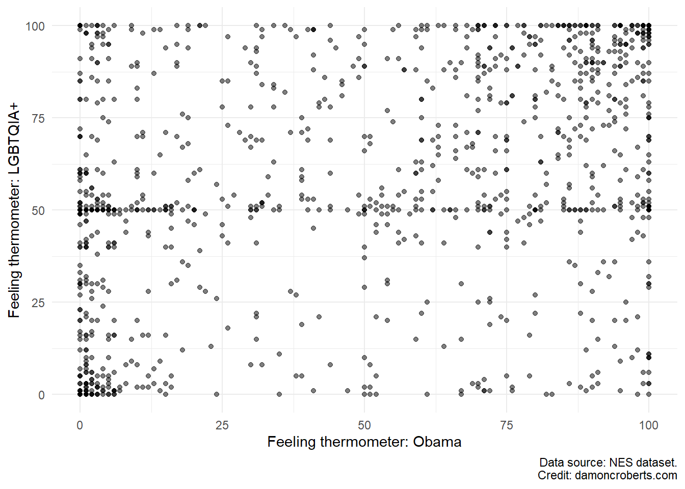

11 2️⃣ Simple bivariate analyses
Often times in science, we don’t want to just understand how one thing occurs. We often want to understand and explain phenomenon. These phenomenon are not just how one feature in the world varies, but how it varies with something else.
We often seek to understand each variable on its own through univariate analyses through summarizing our variables see the summarizing data page. We then move into examining how two or more variables vary together through bivariate (two variables) and multivariate (more than two variables) analyses.
Many new analysts often want to jump right into examining correlations between two variables or even getting into exploring how one variable may cause another. But, again, it is important to first understand our variables and their underlying processes before we jump right into more complicated analyses. If we jump right into more complicated analyses, we could be missing some really important insights that may highlight a number of useful things to the analyst. We will see examples of what kinds of things it can help us identify as we move throughout the term.
So again, recall we want to provide univariate summaries of our data before we even engage in bivariate summaries. What are the tools that we can use to perform bivariate summaries? Like with univariate descriptive statistics, we can use a number of visual or numerical representations. Let’s start with numerical.
11.1 Numerical representations
11.1.1 Cross tabulations (crosstabs)
One really great option for summarizing the relationship between categorical (discrete) variables is through a cross tabulation. The cross tabulation allows us to examine how various values of one variable map onto the values of another variable.
Let’s go through an example. Say we want to examine whether Barack Obama voters in the 2012 presidential election are more likely to believe that the police treat White citizens better than Black citizens.
There are a few ways that we can create a crosstab in R:
table()function: this is the most simple code, but also provides the least visual information
I am going to use the table() function and will tell it to take the votes12 and disc_police variables from the nes dataset to create a crosstab. I tell it how to access those variables from the nes dataset by using the $ function (e.g., nes$vote12 and nes$disc_police).
# Create crosstab with table
table( # use the table function
nes$vote12, # from the nes dataset, use the vote12 variable
nes$disc_police # from the nes dataset, use the disc_police variable
)
Treats whites much better Treats whites moderately better
Mitt Romney 14 48
Barack Obama 245 94
Someone Else 11 11
Not asked 67 28
Treats whites a little better Treats both the same
Mitt Romney 86 204
Barack Obama 72 86
Someone Else 17 28
Not asked 46 92
Treats blacks a little better Treats blacks moderately better
Mitt Romney 9 1
Barack Obama 4 4
Someone Else 0 1
Not asked 4 2
Treats Blacks much better Skipped
Mitt Romney 2 0
Barack Obama 0 0
Someone Else 0 0
Not asked 1 1xtabs()andftable()functions: a bit more code, but easier to read- I am going to first create the crosstab using the
xtabs()function. I can tell it to make a cross tab with thevote12anddisc_policevariables. I am going to tell it which dataset these variables are in by using thedataoptions. I am also going to use the~symbol at the front so that R knows which variable comes first. I will then use the+to let it know what the second variable is. - I can then make the crosstab a bit more readable by then passing the result of my
xtabs()function to theftable()function.
- I am going to first create the crosstab using the
Notice how I do the second step differently in the code below. In the first one, I store the results of the crosstab produced with the xtabs() function into an object called tab. I then tell the ftable() function to use the tab object to make the table. In the second option, I use the %>% function instead. I tell it to grab the nes dataset, to then use the xtabs() function on the vote12 and disc_police variables in the nes dataset. I then use the %>% function again to pass the result of the xtabs() function directly to the ftable() function. This code is a bit more compact and easier to read. Either approach gets you the same result.
# Option 1: Less compact code
tab <- xtabs( # store the result in tab
~ vote12 + disc_police, # use the vote12 and disc_police variables
data = nes # use the nes dataset for these variables
)
ftable( # Apply the ftable function to...
tab # ... the tab object (defined above)
)
# Option 2: More compact code
nes %>% # grab the nes dataset
xtabs( # perform the crosstab..
~ vote12 + disc_police, # use the vote12 and disc_police variables
data = . # and use the data connected by the pipe operator (can just use .)
) %>%
ftable() #... and then make it look nicer with ftable disc_police Treats whites much better Treats whites moderately better Treats whites a little better Treats both the same Treats blacks a little better Treats blacks moderately better Treats Blacks much better Skipped
vote12
Mitt Romney 14 48 86 204 9 1 2 0
Barack Obama 245 94 72 86 4 4 0 0
Someone Else 11 11 17 28 0 1 0 0
Not asked 67 28 46 92 4 2 1 1datasummary_crosstab()from themodelsummarypackage (Arel-Bundock 2022): code is much cleaner, so is output.
A third option for making crosstab is to use the datasummary_crosstab() function from the modelsummary package. I personally think these crosstabs are a bit easier to read and are a bit cleaner. As they are tables produced from the same package we used to do univariate descriptive statistics, we can use very similar code to produce these crosstabs!
First, I am going to take the nes dataset and am going to tell R to apply the datasummary_crosstab() function to it. In the options for the functions, I am going to tell it to use the disc_police and vote12 variables. I am going to also tell it to add a note to the bottom of the table that lets the reader know the dataset you used here. Since I am using the %>% function, I can use the shortcut . to tell it what dataset I am using. Using the %>% already let R know that I am using the nes dataset so I do not need to write it out in that option. Finally, I am going to tell R to save the table from the crosstab in a word document called bivariate_crosstab.docx. I can then open the file after I’ve run the code, and then copy and paste the results into my main report or assignment for the class!
nes %>% # grab the nes dataset
datasummary_crosstab( # use the datasummary_crosstab on it
disc_police ~ vote12, # using the disc_police and vote12 variables
notes = "Data source: NES dataset.", # add notes to table
data = ., # using the dataset connected by the pipe operator
output = "bivariate_crosstab.docx" # store result in the word document bivariate_crosstab.docx
)| disc_police | Mitt Romney | Barack Obama | Someone Else | Not asked | All | |
|---|---|---|---|---|---|---|
| Treats whites much better | N | 14 | 245 | 11 | 67 | 337 |
| % row | 4.2 | 72.7 | 3.3 | 19.9 | 100.0 | |
| Treats whites moderately better | N | 48 | 94 | 11 | 28 | 181 |
| % row | 26.5 | 51.9 | 6.1 | 15.5 | 100.0 | |
| Treats whites a little better | N | 86 | 72 | 17 | 46 | 221 |
| % row | 38.9 | 32.6 | 7.7 | 20.8 | 100.0 | |
| Treats both the same | N | 204 | 86 | 28 | 92 | 410 |
| % row | 49.8 | 21.0 | 6.8 | 22.4 | 100.0 | |
| Treats blacks a little better | N | 9 | 4 | 0 | 4 | 17 |
| % row | 52.9 | 23.5 | 0.0 | 23.5 | 100.0 | |
| Treats blacks moderately better | N | 1 | 4 | 1 | 2 | 8 |
| % row | 12.5 | 50.0 | 12.5 | 25.0 | 100.0 | |
| Treats Blacks much better | N | 2 | 0 | 0 | 1 | 3 |
| % row | 66.7 | 0.0 | 0.0 | 33.3 | 100.0 | |
| Skipped | N | 0 | 0 | 0 | 1 | 1 |
| % row | 0.0 | 0.0 | 0.0 | 100.0 | 100.0 | |
| All | N | 364 | 505 | 68 | 241 | 1178 |
| % row | 30.9 | 42.9 | 5.8 | 20.5 | 100.0 | |
| Data source: NES dataset. Credit: damoncroberts.com |
Notice how we’ve got a few different options to choose from here. One additional thing to make our interpretation a bit easier is to clean the variables. Again, remember the primary goal of my analysis from the start was to examine whether or not people that voted for Barack Obama in the 2012 election felt that Black Americans are more discriminated against by the police or not. This implies that we can compare folks that voted for Obama to those who did not and only on whether they felt that Black Americans were targets of discrimination by the police or not. This means that for my particular analysis here, I can turn these two variables into a dichotomous variable to help me examine my question. One variable that reflects whether the respondent voted for Barack Obama or not and a second variable that reflects whether the respondent indicates that Black Americans are not treated better by the police or those who believe that Black Americans are compared to Whites.
Recall from the previous exercise on the basics of cleaning data, that we can take advantage of the super nifty functions provided by the dplyr (Wickham et al. 2023) package for data cleaning.
I am going to take the nes dataset and am going to select() the two columns I am interested in examining.
Since I am going to be trying to make new columns using the vote12 and disc_police columns, I can use the mutate() function. First, I am going to create a new column called vote12_clean that has a value of 1 if the respondent voted for Obama and a value of 0 if they voted for Mitt Romney or Someone Else.
Then, I am going to add value labels with the factor() function where people that have a value of 0 for the newly created vote12_clean variable have a label of “Not Obama” and a label of “Obama” if they did vote for Obama (a value of 1).
I am going to do a similar thing with the disc_police variable. For people that do not indicate that the police treat Black Americans better, they will have a value of 0 in the new disc_police_clean variable. Those that say that police do treat Black Americans better will now have a value of 1 in the new disc_police_clean variable. I am going to use the factor() function to add labels to the values of 0 and 1 to make my life easier. I am going to tell it to add a label “Does not treat better” to the smallest value in the new disc_police_clean variable – so 0 – and add the label “Does treat better” to those who have a value of 1 in the new disc_police_clean variable.
# Clean the variables of interest in the nes datasets
nes_clean <- nes %>% # from the nes dataset...
select( # ... select the following variables...
vote12, # ... the vote12 variable...
disc_police #... and the disc_police variable
) %>% # ... after they've been selected...
mutate( #... I am now going to "mutate" or transform these columns into a new one
#* vote12 - did the respondent vote for Obama in '12 or not?
#** Coded as:
#*** 1 = Mitt Romney
#*** 2 = Barack Obama
#*** 3 = Someone Else
#*** 4 = Not asked
#** Recoded to:
#*** 0 = Mitt Romney/Someone Else
#*** 1 = Barack Obama
#*** NA = Not Asked
vote12_clean = case_when(
vote12 == "Mitt Romney" ~ 0, # make values of Mitt Romney equal to 0
vote12 == "Barack Obama" ~ 1, # make values of Barack Obama equal to 1
vote12 == "Someone Else" ~ 0 # make values of Someone Else equal to 0
),
vote12_clean = factor(
vote12_clean, # take the newly created column
labels = c(
"Not Obama", # add this label to values of 0
"Obama" # add this labels to values of 1
),
ordered = TRUE # the numerical value order matters here
),
#* disc_police - belief that police treat Black Americans better than Whites
#** Coded as:
#*** 1 = Treat Whites much better
#*** 2 = Treat Whites moderately better
#*** 3 = Treats Whites a little better
#*** 4 = Treats both the same
#*** 5 = Treats Blacks a little better
#*** 6 = Treats Blacks moderately better
#*** 7 = Treats Blacks much better
#** Recoded to:
#*** 0 = Treats Whites [much/moderately/a little better]/treats both the same
#*** 1 = Treats Blacks [much/moderately a little better]
disc_police_clean = case_when(
disc_police == "Treats whites much better" ~ 0, # make this response equal to 0
disc_police == "Treats whites moderately better" ~ 0, # make this response equal to 0
disc_police == "Treats whites a little better" ~ 0, # make this response equal to 0
disc_police == "Treats both the same" ~ 0, # make this response equal to 0
disc_police == "Treats blacks a little better" ~ 1, # make this response equal to 1
disc_police == "Treats blacks moderately better" ~ 1, # make this response equal to 1
disc_police == "Treats Blacks much better" ~ 1 # make this response equal to 1
),
disc_police_clean = factor(
disc_police_clean, # take the newly created column
labels = c(
"Does not treat better", # add this label if equal to 0
"Does treat better" # add this label if equal to 1
),
ordered = TRUE # the numerical value order matters here
)
)Now I can make a even cleaner crosstab.
nes_clean %>% # use the nes_clean dataset...
datasummary_crosstab( # ... with the dataset, create a crosstab
disc_police_clean ~ vote12_clean, #... and use the two cleaned variables
notes = "Data source: Nes dataset.", # add notes to table
data = ., # and use the dataset connected by the pipe operator
output = "cleaner_bivariate_crosstab.docx" # store the table in this word document
)| disc_police_clean | Not Obama | Obama | All | |
|---|---|---|---|---|
| Does not treat better | N | 419 | 497 | 1149 |
| % row | 36.5 | 43.3 | 100.0 | |
| Does treat better | N | 13 | 8 | 28 |
| % row | 46.4 | 28.6 | 100.0 | |
| All | N | 432 | 505 | 1178 |
| % row | 36.7 | 42.9 | 100.0 | |
| Data source: NES dataset. Credit: damoncroberts.com |
11.2 Visual
11.2.1 Boxplots
Just as we can with univariate summaries, we can visually depict bivariate summaries. One of the more powerful ways to do this if you have at least one categorical variable is to use a boxplot. In the previous exercise, we used a boxplot for a univariate description. In that example, we only specified a variable for the x-axis. For a bivariate case, we can put a categorical variable on the x-axis and a variable on the y-axis.
Say we want to examine the composition of states’ murder rate that voted for Donald Trump in the 2016 Presidential election relative to states that did not vote for Donald Trump. We can use a categorical variable that documents whether Trump won the state or lost the state. We can put this categorical variable on the x-axis. For the y-axis, we can use a variable documenting the state’s murder rate.
We can use the states dataset as it has both of these variables. The first variable, trumpwin, documents whether Trump won or lost in a given state. The second variable, murderrate, documents the murder rate per capita in a state.
To make the box plot, we can run the following code:
states %>% # grab the states dataset
mutate( # create a new column based on an existing one
trumpwin_clean = factor( # create a column trumpwin_clean with value labels
trumpwin, # use the existing trumpwin variable for this
labels = c(
"Loss", # for the first value (0), label it Loss
"Won" # for the second value (1), label it Won
),
ordered = TRUE # the order of the values and labels matter
)
) %>% # after I've done this, now I can make a plot
ggplot() + # make a ggplot object
geom_boxplot( # make a box plot
aes(
x = trumpwin_clean, # where the x-axis is whether trump won or not
y = murderrate # and the y-axis is the murder rate in the state
),
fill = "#D3D3D3" # fill the boxplot with a light grey color
) +
theme_minimal() + # add the minimal theme to look prettier
labs( # clean up the labels
x = "Trump won state", # change x-axis label to this
y = "Murder rate per capita", # change y-axis label to this
caption = "Data source: States dataset." # add caption
)Here is a break down of what this code does:
- I am going to grab the
statesdataset and use the pipe function (%>%) to chain all of the code together. This makes it so that R knows that I am referring to thestatesdataset for the the code connected by pipe functions. - I am going to use some of my data cleaning skills learned in the previous exercise and am going to add value labels to the
trumpwinvariable. I do this because I want it to be easier for me to keep track of what a 0 means for thetrumpwinvariable versus a 1. So to add these value labels, I am going to use the built-infactor()function. Withdplyr’smutate()function (Wickham et al. 2023), I am able to tell R that I am going to create a new column using information from an existing variable. I am going to create a new variable calledtrumpwin_cleanthat will have the value labels defined by thefactor()function. So I am going to tell it that I am going to be using thetrumpwinvariable and am going to add the value labels of “Loss” and “Win” to the variable. So values of 0 in thetrumpwinvariable will be labelled as “Loss” in thetrumpwin_cleanvariable and values of 1 intrumpwinwill be labelled as “Win”. I am also going to set theorderedoption equal toTRUEbecause I want to respect the order of the values in the originaltrumpwinvariable. - Now I can make a plot. So I am going to use the
ggplot()function to tell R, that after you’ve done the previous things, now I am going to make a plot. - I am going to use the
geom_boxplot()function to tell R that the plot I told it I want to make will be a boxplot. Within that function, I am going to provide a couple of options. I am going to tell it that I want to make the x-axis of the boxplot the new variable that I created with the value labels,trumpwin_clean. I am also going to tell it that the y-axis should be themurderratevariable. Finally, I am going to tell it that I want the color of the boxes to be filled in with a light grey color. - I want to make the plot prettier so I am going to use the
theme_minimal()function to apply that theme to the plot - I am also going to add cleaner labels to the plot as well. So I am going to use the
labs()function to tell it that I want the x-axis to be labeled as “Trump won state”, the y-axis to be “Murder rate per capita”, and to add a caption to the bottom that says “Data source: States dataset.”

11.3 Scatterplot
If we have two continuous variables, then we can make a scatterplot instead.
Say for example, we want to look at those who have positive feelings toward Barack Obama and their feelings toward LGBTQIA+ rights.
Looking at the nes dataset, I see that there is a question that people were asked about their “temperature” toward Obama and toward Gay rights. These questions are referred to as feeling thermometers where respondents can choose on a scale from 0-100, how warmly they feel toward the person or group or how cold their feelings are toward them. There is a feeling thermometer for Obama, ftobama, and for the LGBTQIA+ community, ftgay, in the nes dataset.
Using functions from the ggplot2 package (Wickham 2016), I can make a scatter plot for these.
nes %>% # grab the nes dataset and apply the following
ggplot() + # create a ggplot object
geom_point( # make this plot a scatterplot
aes(
x = ftobama, # use the ftobama variable for the x-axis
y = ftgay # use the ftgay variable for the y-axis
),
color = "#000000", # add black for outline of points
fill = "#D3D3D3", # add grey to fill of points
alpha = 0.5 # add transparency to each point
) +
theme_minimal() + # use the minimal theme to make prettier
labs( # adjust the labels
x = "Feeling thermometer: Obama", # change the x-axis label to this
y = "Feeling thermometer: LGBTQIA+", # change the y-axis label to this
caption = "Data source: NES dataset." # add this as the caption
)Here’s what this code does:
- Take the
nesdataset and apply the following to it. - Make a
ggplot()object - Specifically, make a scatter plot with the
geom_point()function. For this scatterplot, I want the x-axis to be theftobamavariable and the y-axis variable to be theftgayvariable. I want to make the outlinecolorof the circles to be black and thefillcolor of the circles to be light grey. I want the dots to be somewhat transparent so I am going to set thealphato 0.5. - Then, I want to use the minimal theme for the plot, so I am going to use the
theme_minimal()function. - I also want to change the labels on the plot. So using the
labs()function, I am going to tell the x-axis to be labelled as “Feeling thermometer: Obama”, the y-axis to be labelled as “Feeling thermometer: LGBTQIA+”, and add a caption to indicate that the data source is the “NES dataset.”

11.4 Some final notes:
- The choices and considerations that apply when you are trying to summarize a single variable more than double by doing this for two variables. You should think very carefully about what information you want to convey to your reader. This will help you know what steps you need to take (should I clean a variable before hand? Should I use a scatterplot or a boxplot? etc.)
- You can find a complete working R file for this by going to this page.